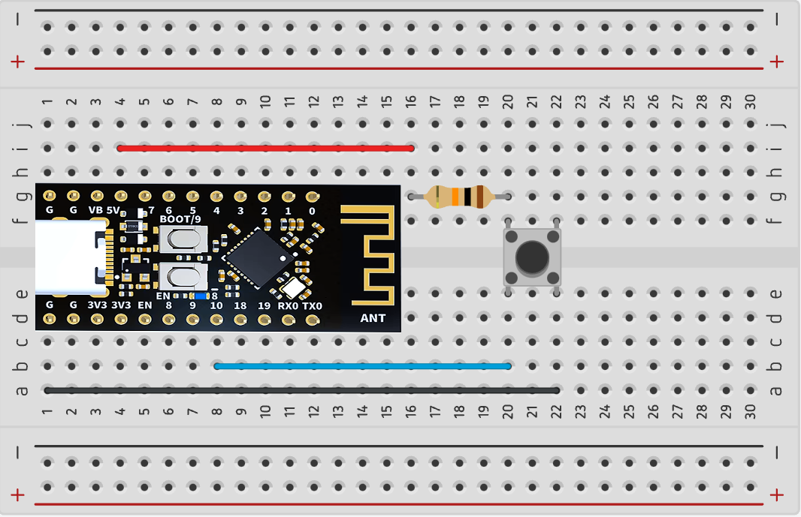

Project 5
iPoduino v2.0
By Zicong Yu
Overview
Microcontrollers often communicate with other devices, like sensors, actuators, or maybe... an MP3 player module. In this project, we will explore how embedded systems transmit and receive data through the UART communication protocol.
Small checkpoints will prepare you for the final task: You will create an MP3 player with a "Play/Pause" toggle button and a "Skip/Next Song" button, using the DFPlayer Mini module. Songs are pre-loaded onto a microSD card which you will insert into the module. The system will output sound through a small speaker.
Concepts
UART
Embedded within the ESP32 is a device called the Universal Asynchronous Receiver-Transmitter (UART). It may communicate with another UART by transmitting or receiving messages known as packets. This is done in serial, meaning packets are sent one bit of data at a time. UARTs also communicate asynchronously, so there is no clock to time when packets are transmitted or received.

Serial Communication with ESP32
We can use the UART in our ESP32 to transmit data to another UART device. To do so, we will enlist the help of the
Serial Library, which is already installed in the Arduino IDE and includes functions you are already familiar with (ex. Serial.begin(115200), Serial.print(val), etc).
The data within each packet sent with UART is one byte in size, meaning if the data contained an int, its value could only be in the range -128 to 127 (signed) or 0 to 255 (unsigned). We’ll see how this comes into play later.
Every UART can both transmit and receive packets, which is referred to as duplex communication. They communicate over their TX and RX pins; recall that the TX pin on one device connects to the RX pin on the other.
Remember how we set the baud rate of our ESP32 using Serial.begin(115200)? When a UART receives a transmission, it reads each bit at the speed of the baud rate (measured in bits per second). Both the transmitting and receiving UART must have the same baud rate for proper communication.
There are three core functions of the Serial library:
Serial.write(val)sends data from the ESP32 board to another UART device. You will use it to transmit one byte at a time, meaning the int value passed as an argument must be in the range-128 to 127(signed) or0 to 255(unsigned).- When the ESP32 receives data, we need to check its receive buffer, a “mailbox” or an array of recently received bytes.
Serial.available()will return anint, the number of bytes currently in the UART buffer. If the number is zero, nothing has been received. - If the UART buffer does have data in it, you will read the byte at the front of the buffer using
Serial.read(), which returns anint.
Universal Serial Bus (USB) on the ESP32
USB is a serial communication protocol used widely by modern computers. It defines the standards by which devices transmit data over USB cables. When you plug the ESP32 into your computer, upload a sketch, and execute a program with Serial.print(), data transmits between the ESP32 and your computer using the USB protocol.
Hidden behind the scenes is the UART. Data is transmitted between the computer and ESP32 through a chip that converts USB signals to UART signals. Those converted signals are then transmitted to and from the UART within the ESP32's microcontroller.
With this in mind, remember that the ESP32's USB port is hardwired to the TX and RX pins of the board. Do not upload a sketch to an ESP32 while the board is connected via the TX/RX pins to another ESP32. Do not attempt to use Serial.print() under these conditions either.
Hardware Serial
The HardwareSerial library enables UART communication over the predefined RX and TX other pins of the ESP32 board. Why do we need it? Hardware Serial provides a built-in UART connection through the ESP32 and creates a fast, reliable (meaning error correction and buffering), and efficient. This lightens the load on the microcontroller CPU allowing more processing power for other tasks. HardwareSerial’s reliability is important for sensors that want accurate information. ESP32’s UART is able to be full-duplex meaning that it can send and receive at the same time using its TX and RX pins respectively.
#include <HardwareSerial.h>
const int rxPin = 20;
const int txPin = 21;
HardwareSerial mySerial1(1);
The code above creates an object of the HardwareSerial class that manages a new UART connection over TX and RX pins passed to the constructor. Then, you just use the pins like you would normally!
There are several limitations of HardwareSerial: not all microcontrollers support multiple RX and TX pins, which makes multiple simultaneous serial connections not possible. Additionally, not all digital pins may support HardwareSerial. If you're curious, you find out more Find out more here.
Pull-Up Resistors
Suppose you use a digital input pin on the ESP32 board, but it’s not connected to anything. Is the state of the pin HIGH or LOW? For it to be HIGH, the pin would need to be connected to the VCC power source. For the state to be LOW, the pin would need to be connected to GND. When the state is indeterminate like this, the pin is said to have a floating signal, which we should avoid.
The solution is what we call a pull-up resistor. The input pin is connected to a high-value resistor R1 whose other terminal is attached to VCC (as depicted below).

The intent is to set the input pin to the HIGH voltage. We often use a 10kΩ resistor to do so. Now, the input pin has an effective resistance in the range of 100 MΩ. That’s right: mega-ohms.
The resistance of the pull-up resistor R1 and effective resistance of the input pin divide the voltage VCC such that the voltage at the input pin is equal to VCC (HIGH).
Now, let’s introduce the button: one terminal attached to the input pin and the other GND.
When the button is pressed, the voltage at the input pin is shorted to GND (LOW).
With this circuit, the input pin will either be VCC or GND (HIGH or LOW). Let’s see how it would look on a breadboard:
In the layout above, the pushbutton is connected to an external pullup resistor. Its state (HIGH or LOW) is read from pin 10 of the ESP32.
Internal Pull-Up Resistors
When you use a button, you should combine it with a pull-up resistor. Instead of building an external circuit, you can use an internal pull-up resistor in the ESP32 board. You may do so by setting the pin mode as follows:
pinMode(pin, INPUT_PULLUP);
The layout above is for a pushbutton that uses the ESP32’s internal pullup resistor.
DFPLayer Mini MP3 Player
The ESP32 has too little memory to load and play audio files. Instead, we use a separate device to store and manage the audio media: The DFPlayer Mini is a small MP3 module that connects to an ESP32 (or other microcontrollers) over UART.

We will use the module's serial mode. In serial mode, we need only connect the module's TX/RX, Power, Ground, and speaker pins. Using UART, the ESP32 will send commands to the DFPlayer Mini to playback songs, pause, change volume, etc. This is facilitated by a custom Arduino library.
Explore more about the DFplayer Mini at its wiki page.
Datasheet and Pinout Diagram
As an optional exercise of technical documentation literacy, we will not provide the pinout diagram. Instead, you can access the datasheet here.
Remember that you are looking for the following in the datasheet’s pinout diagram: TX, RX, Power (VCC), Ground (GND), Speaker +, and Speaker -. (Hint: Look at Section 2 of the datasheet).
Read Section 1.2, 1.4 for information about the supported file types, file naming conventions, and folder (a.k.a. directory) structure for the MicroSD card.
Using the DFPLayer Mini with ESP32
You can download the DFPlayer Mini library v1.0.5 here. We recommend this version as newer ones have produced errors in our testing. It can be used in your code with the following include:
#include <DFRobotDFPlayerMini.h>
Below is sample code that demonstrates the module in serial mode. The program plays an audio file named “0001.mp3” for five seconds, then pauses it for five seconds, then resumes. Then, in the loop, it cycles through songs every 5 seconds. Use this as a reference for the commands to send to the MP3 module.
Do not blindly copy-paste the sample code to your project deliverables. Read it, understand it, then adapt it to your own code.
#include <HardwareSerial.h>
#include <DFRobotDFPlayerMini.h>
// Use pins 20 and 21 with HardwareSerial to communicate with DFPlayer Mini
const int PIN_MP3_TX = 21; // Connects to module's RX
const int PIN_MP3_RX = 20; // Connects to module's TX
// Define serial port objects
HardwareSerial mySerial1(1); //use UART1
// Create the player object which will serve as an interface for our DFPlayer commands
DFRobotDFPlayerMini player;
void setup() {
// Initialize USB serial port for debugging
Serial.begin(115200);
// Initialize the pins for HardwareSerial. No pinMode calls needed.
mySerial1.begin(9600, PIN_MP3_RX, PIN_MP3_TX); // RX=20, TX=21
delay(1000); //DO NOT REMOVE THIS DELAY. It is needed to properly initialize HardwareSerial.
// Start communication with DFPlayer Mini using player.begin
// player.begin returns true if the connection was a success
// and false if it failed
if (!player.begin(mySerial1)){
Serial.println("Connecting to DFPlayer Mini failed!");
}
// Set the player volume to maximum (0 to 30).
player.volume(30);
// Play the "0001.mp3" file in the "mp3" folder on the microSD card.
player.play(1);
// Delay the next command by 5 seconds.
delay(5000);
// Pause the playback.
player.pause();
// Delay the next command by 2 seconds.
delay(2000);
// Resume the playback from pause.
player.start();
// Here are some useful debugging functions
// Sometimes they don't return valid values. In that case, ignore them.
Serial.println(player.readFileCounts()); // Returns number of files in microSD
Serial.println(player.readCurrentFileNumber()); // Returns current file number being played
}
// Change songs every 5 seconds.
void loop() {
// Delay the next command by 5 seconds.
delay(5000);
// Skip to the next song.
player.next();
}
Installing Arduino Libraries
Here is a quick recap on how you can install Arduino libraries in the Arduino IDE 2.0.0+
- Download the library as a .zip
- In the Arduino IDE, go to Sketch → Include Library → Add .ZIP Library…
- Select the .zip of the library and click Open.

You're done! Just make sure to #include the library header file so that your
code compiles.
| DFRobot DFPlayerMini | Download |
ESP32 Pinout Diagram
Thinking about using a pin but you don't know what it does? Refer to the ESP32 Board pinout diagram.

- NC stands for No Connect, and these pins should be left unconnected at all times.
- GPIO stands for a General Purpose Input/Output pin and can be used to send or read signals.
- ADC stands for analog-to-digital converter and it reads the input voltage and makes a digital number to represent that amount of voltage.
- The ~ symbol represents pins that are PWM (Pulse Width Modulation) capable.
Requirements
UART Echo (Optional)
- You must write a program in which the ESP32 board “echoes” back any byte (0-255) sent to it over UART.
- When the user enters a byte value (0-255) into the Arduino IDE Serial Monitor from their computer, the value is sent to the ESP32 board. The board must send the same value back to the computer.
- The ESP32 will only “echo” back a value sent to it once. It should not resend the value multiple times.
- The program must run in an infinite loop.
External Pull-Up Resistor Circuit
- Using the ESP32 board, you must build a digital LED circuit which is activated by a pushbutton connected to an external pull-up resistor.
- When the pushbutton is pressed, the LED connected to pin 4 should turn ON.
- The LED must turn OFF when the pushbutton is released.
- The circuit must be built on a breadboard.
Internal Pull-Up Resistor Circuit
- Using the ESP32 board, you must build a digital LED circuit which is activated by a pushbutton connected to an internal pull-up resistor.
- When the pushbutton is pressed, the LED connected to pin 4 board should turn ON.
- The LED must turn OFF when the pushbutton is released.
- The circuit must NOT use an external pull–up resistor.
- The circuit must be built on a breadboard.
iPoduino
- You must build a MP3 Player with speaker sound using the DFPlayerMini module.
- The player must have two buttons.
-
One of the player’s buttons must toggle the music between “Play” mode and “Pause” mode.
- In “Play” mode, the player must playback a song. It should resume the song that was previously paused if the “Skip/Next Song” button was not pressed.
- In “Pause” mode, no song should be played.
-
The second button should be the “Skip/Next Song” button, which interrupts the current song and plays a new song.
- Each press of this button must cycle through all songs loaded on the MicroSD card.
- If the player was in “Pause” mode when the “Skip/Next Song” button is pressed, the player must immediately enter “Play” mode.
- The speaker must be silent when no song is played. No static or white noise.
- The speaker must clearly output music when a song is played.
- The circuit must be built on a breadboard.
Parts
| Part Name | Qty |
|---|---|
| Jumper Wire | ? |
| Breadboard | 1 |
| ESP32 | 1 |
| MicroSD Card | 1 |
| Pushbutton Switch | 2 |
| Speaker, 0.5W, 8Ω | 1 |
| Resistor, 1kΩ | 1 |
| Resistor, 10kΩ | 1 |
| DFPlayer Mini Module | 1 |
| Mini USB Cable | 1 |
Schematics
Instructions
Checkpoint 1 (Optional)
-
Connect the ESP32 to your computer and open the Arduino IDE. You will write a small program that echos small byte-sized values between the Nano and your computer.
Reference the UART Concepts section for writing this program.
- Upload your sketch to the ESP32, and verify that the program executes as expected. Open the Arduino IDE Serial Monitor, enter small integer values, and observe the communication between the computer and the ESP32.
Checkpoint 2
- Build the circuit from Schematic A (External Pull-Up Resistor Circuit) on your breadboard. You will design a digital LED circuit with an external pull-up resistor and pushbutton.
- Upload your sketch to the ESP32, and verify that the program executes as expected.
Checkpoint 3
-
Build the circuit from Schematic B (Internal Pull-Up Resistor Circuit) on your breadboard. You will design a digital LED circuit with an internal pull-up resistor and pushbutton.
Set the digital pin mode to INPUT_PULLUP.
- Upload your sketch to the ESP32, and verify that the program executes as expected.
Checkpoint 4
-
Build the circuit from Schematic C (iPoduino) on your breadboard. Use the sample code provided in the Concepts sections to guide your ESP32 program.
Carefully implement the code so that each button triggers an action only when first pressed. Ask for help if you get stuck.If you get stuck on breadboard layout, open the hint below:
- Upload your sketch to the ESP32, and verify that the circuit meets the design requirements.
Deliverables (Enrolled Students Only)
Students enrolled in the course must submit the deliverables below to the corresponding Canvas course assignment.
Place the following files in a single folder:
-
iPoduino sketch file
This file should include all of the code you have written for the final checkpoint.
-
Video of the iPoduino (Schematic C) on a breadboard
In the video, cycle through the three minimum songs. Toggle the “Play/Pause” button for at least one song.
Compress the folder to a zip file and rename the file using the format “ops_project5_lastname_firstname.zip” Then, submit the zip file to the Project 5 Canvas assignment.